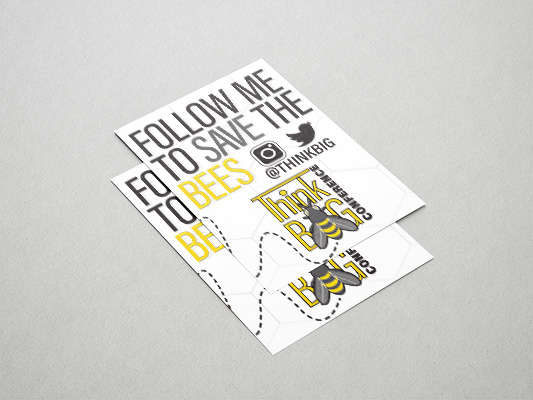
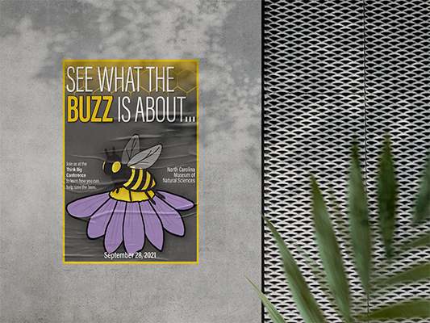

About
Some of my first memories are of fighting with my older sister over watercolors on the kitchen floor. Being daughters of an art teacher, we often painted masterpieces on wax paper my mother had Scotch-taped to the tiles.
After a few years of attending the School of Hard Knocks, I gathered myself and focused on returning to college to chase that thirst for creativity through visual art.
Although I may have evolved to digital design as a medium, that love and devotion for art hasn't faded. What I hope to do as a Graphic Designer is help others to create the brand, design, illustration, and/or advertising of their dreams. With our heads put together, we can create a masterpiece worth sharing. Let's connect!
Now instead of wax paper I use:
x Adobe Illustrator
x Adobe Photoshop
x Adobe InDesign
I'm currently learning:
x Procreate
x Adobe Dimension
Keep on scrolling to see some examples of my work.
Advertising
Let's design an advertising campaign together! I can design lanyards, maps, posters, flyers, signs, ID badges, photo backdrops, brochures, and mailers to help get the word out about your company or event.
- 
- 
Websites
Need a website or someone to maintain an existing one? Check out my previous works and see if I can help you out.
Contact
Question? Comment? Review? Idea? Hypothesis? Let's put our heads together and figure it out. Fill out the form below!